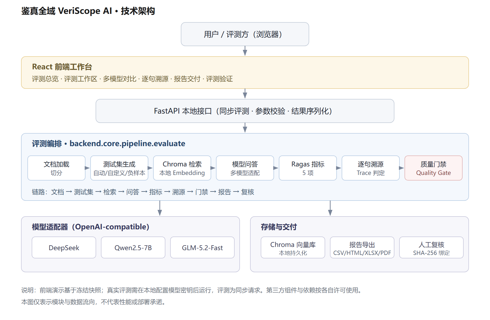

逐句核对与质量门禁平台：AI 的每个回答，都能逐句查到出处。
材料日期：2026-10-14。证据运行：2026-10-05 正式运行，2026-10-14 修复后重跑。代码仓库：Gitee（主） · GitHub（镜像）。
RAG 问答应用上线前，「回答是否可信」通常只看一个平均分，或者人工抽查几条。这样说不清错在哪一句，也说不清这批回答能不能放行。
本平台的做法分三步：
题集、检索原文、回答、逐句判定、指标、门禁记录和人工核验保存在同一条链路上，可以逐条回查：
题集 → 逐句核对 → 门禁 → 报告 → 人工核验
本项目不自研指标，指标计算复用 Ragas，工作集中在指标之上：
| 层 | 内容 |
|---|---|
| 自研 | 逐句判定与证据定位；质量门禁（保留真实 FAIL）；人工核验存档（与机器判定并列、互不覆盖）；中文陈述兼容层 |
| 复用 | Ragas 0.1.21；LangChain、Chroma、OpenAI 兼容接口；React、ECharts；Docker Compose |
与已有方案的区别（功能定位比较，不是同条件性能排名）：
以上比较基于各项目公开资料（核对日期 2026-10-11 至 10-14），没有做同条件对照。本项目不声称「业界唯一」，也不声称核查准确度高于上述项目。
主要能力（均已实现）：
适用行业： 拦的是上线前和每次改动后的版本，只查回答与资料是否一致，因此面向资料权威、答错代价高、需要留痕、要求私有化的行业。
| 场景 | 谁用 | 不拦截的后果 | 已有证据 |
|---|---|---|---|
| 银行 / 保险条款问答 | 智能客服、员工助手的测试人员；合规复核 | 限额、期限、免责条款答错，引发投诉和理赔纠纷 | 存款保险 25 题：FAIL → 归因 → 改提示词 → PASS |
| 政务咨询问答 | 政务问答、热线知识库的承建与测试团队 | 期限、材料答错，群众误期、白跑，转为投诉 | 未参与调试的政府信息公开节选：留出题 12/14 → 14/14 |
| 央国企制度问答 | 数科公司测试；合规、内审复核 | 审批权限、报销标准答错，内审查出违规 | 尚无实测 |
不适合：新闻与联网搜索（资料不保证正确）、营销与闲聊（没有对照原文）、投资建议与医疗诊断（结论不在资料里）、线上逐条实时拦截。
1. 发现（2026-10-05）。 用《存款保险条例》节选的 25 题正式运行（deepseek-chat，325 次调用）：
2. 归因。 逐句核对显示：作答题的 40 条陈述都有原文依据。拦截的 76% 来自 4 道「错误前提」题。这几道题的检索原文里有纠正所需的法条，模型却直接回答「无法回答」。结论是该修问答提示词，不是检索。
3. 修复（2026-10-14）。 在问答提示词里加了一句：「问题的说法或前提与参考资料不一致时，依据资料指出并纠正，不要拒答」。
4. 验证。 同一题集、同一资料、同一模型重跑 25 题；门禁、阈值、裁判都没有改。
5. 留出题验证。 上一步用的是发现问题的同一批题。为检验修复能否推广，另出 24 道没参与调试的新题，作者确认后运行。两组提示只差新加的那一句：
局限： 题量小，配对符号检验 p = 0.0625，未达到 0.05；两轮验证都只用了一个模型，各跑一次；25 题重跑离阈值只有约 0.06；重新生成回答并换独立裁判（Qwen2.5-72B）重跑同一版本，正向忠实度 0.7992，门禁回到 FAIL；部分回答发生变化，不能把 PASS／FAIL 变化全部归因于裁判。证据见 正式运行、修复验证、留出题验证、独立裁判复核。
外部项目（2026-10-14）。 用同样的方法检验了 Langchain-Chatchat 的默认知识库提示词。5 道错误前提题中，它拒答 2 道，说明同类问题在外部项目中同样存在。只测了默认提示词，不代表其实际部署效果。已向该项目提交 Issue。详见 外部案例。
| 日期 | 内容（点击查看证据） | 结果 |
|---|---|---|
| 10-05 | 25 题正式运行 | 门禁 FAIL（0.7375） |
| 10-11 | 换独立裁判（Qwen2.5-72B）重判 | 结论不变，逐题分数差异约为自我重判的 5–6 倍 |
| 10-13 | 外部基准（ANAH 300 句、RGB 100 题） | 召回率 0.89，精确率 0.87 |
| 10-13 | 鲁棒性体检（20 题 × 4 种条件） | 移除依据后应用拒答 19/20 |
| 10-14 | 本机无外网试跑（Ollama 2B） | 外网连接尝试 0 次 |
| 10-14 | 修复后重跑 25 题 | 门禁 PASS（0.8607） |
| 10-14 | 留出题验证（24 道新题） | 错误前提题 9/14 → 14/14，无退步 |
| 10-14 | 换独立裁判重跑修复版本 | 门禁 FAIL（0.7992）；回答重新生成，不能把结论变化全部归因于裁判 |
| 10-14 | 外部 RAG 端到端实测（自写示例应用） | 链路跑通，门禁 FAIL；裁判自相矛盾 |
每次付费运行都经过单独授权，原始结果连同哈希一起归档，可以离线复算。
